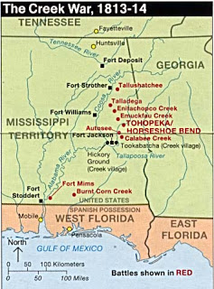

The village was completely unprepared when the siege began. Propelled by an insatiable lust to avenge the recent destruction of a military installation, the attackers chose the small, undefended community as the target of a reprisal raid.
But this wasn’t a battle. It was a slaughter.
Within a few hours, not a living thing was left behind in the village, save only a few troops from the attacking force. The villagers who had weapons faced the larger and better-armed invaders unflinchingly, dying where they stood with their faces to the enemy. “For good measure,” writes one historian, the attackers “shot down women and children until the ground ran vermilion.”
Still, the atavistic appetite for vengeance was not slaked. When it was discovered that 45 people – including women and children – had sought refuge in a cabin, the assailants surrounded the crude little dwelling, set it afire, and both watched and listened as the flames claimed the lives of shrieking, terrified people who cried out to their gods for deliverance.
The following day, after the charred debris of that cabin had cooled, a food cache was found in its basement. The invaders had undertaken a long forced march to reach the village, and their supplies were inadequate to keep the army fed. So from the basement the troops retrieved a large supply of potatoes that had been roasted in the fatty runoff that resulted as their victims were burned to death.
Fortified by their cannibalistic repast, the attackers went on to repeat their exploits at a larger nearby town, this time setting scores of houses ablaze and burning hundreds of civilians. Within a short time they had defeated the main body of their enemy and secured the surrender of their leader, who offered himself for execution as a ransom for the women and children who had been driven into the wild to escape the attackers.
For the victorious commander of the terror campaign, these assaults were simply a down-payment on a more ambitious project, one that would require the expulsion of tribal enemies from their lands, and the extermination of those who didn’t leave. Carrying out the policy he envisioned would eventually claim the lives of tens, perhaps hundreds of thousands of innocent people.
This story could have been set in Darfur, took place in Alabama, amid the “Red Sticks” Creek uprising in 1813.*

The first incident described above, the Tallussahatchee Massacre, was intended as a reprisal for a devastating Creek attack on Ft. Mims, a slapdash installation that was the product of shoddy workmanship and strategic ineptitude.
The Creeks, roiled the revanchist “Red Sticks” movement, were brutal in their attack on Ft. Mims, an engagement they considered necessary to turn back encroaching settlers. Savage as that attack was, it was a "battle," not a "massacre" (as it's commonly called): The fort was a military installation, after all. Though atrocities were committed during the assault, at least some of the Creeks took care to spare non-combatants. One of them, a warrior named Sanota, placed his life at considerable risk to Vicey Cornells and seven of her children, whom he fed and cared for until he could take them to a white settlement.
Of course, there was no reciprocal sense of restraint on the part of those who attacked Tallussahatchee, a target that was chosen specifically because it was defenseless. The next morning, as the militiamen digested the grisly meal described above, their commander gleefully promised that they would “repeat Tallussahatchee” in their next engagement. This was too much for at least some of the men to bear, and they rebelled. Somehow, their commander was able to maintain discipline long enough to carry out the second massacre.
As many of you already know, the architect of these atrocities is the figure who stares out at us from the twenty dollar bill, his craggy features seeming to radiate benevolence. To the Creeks, Choctaw, and others who were the firs subjects of his “Indian Removal” program, Jackson was known variously as Jacksa Chula Harho (“Jackson Old and Fierce”), “Sharp Knife,” and, simply, The Devil.
Among the backwoodsmen who rallied to fight the Red Sticks under Jackson was a Tennessean named Davy Crockett. I’d like to think that Crockett was among those who tried to desert Jackson’s army following Tallussahatchee, and that disgust over Jackson’s acts of undisguised mass murder helped turn Crockett into a foe of “Old Hickory,” but I can’t demonstrate from available records that this was the case.
Red Eagle, the chief who offered himself on behalf of his people in a conference with Jackson at Horseshoe Bend, had been born William Weatherford. His father was an American settler in Georgia, his mother a woman of mixed Scottish/French/Creek ancestry. His brother John had chosen to follow the Euro-American path. As is so often the case in such episodes from our history, Red Eagle displayed greater valor, boldness, and compassion than that demonstrated by the forces of “Christian” civilization.
"Old Hickory" meets with Red Eagle (aka William Weatherford): In defense of his homeland, the Creek war chief (who shared Jackson's Scottish ancestry on his mother's side) offered himself for execution in exchange for mercy toward the women and children of his tribe. That offer tells us something about the savagery of Jackson's campaign against the Creeks.
Andrew Jackson was a man of many worthy accomplishments. He was certainly right about the evil represented by the Bank of the United States. He was also an individual of considerable personal courage. This doesn’t change the fact that he was a war criminal who presided over one of history’s larger atrocities: The “Trail of Tears” and beginning of continent-wide dispossession of the Indians.
The term “Jacksonian” is often wedded to various kinds of populism, as well as the attendant spoils system. But the term, as we shall see anon, has recently come to be used to describe a certain type of authoritarian pseudo-populism that supports both foreign war and the kind of dictatorial presidential leadership that is produced by war.
The fruits of the "Jacksonian" worldview: Iraqis comb the rubble of their homes in search of the remains of their families.
Many conservatives – such as myself, back when I considered that label an adequate description of my convictions – have applauded President Jackson’s defiant, dismissive reaction to a Supreme Court decision he disdained: “That’s Mr. Marshall’s ruling. Now, let’s see him enforce it.” For me, that utterance lost its luster when I learned its context.
Rather than being a principled reaction to judicial activism, Jackson was expressing his dictatorial arrogance in setting at naught the Supreme Court’s finding that the federal government actually had to recognize the sovereignty of the Cherokee Nation within its own territory, as well as the legal, moral, and constitutional obligation to honor treaties.
That 1832 ruling (Worcester v. Georgia), followed a previous decision (Cherokee Nation v. State of Georgia) in which Justice Marshall expressed tremendous sympathy for the besieged Indians, while pleading lack of jurisdiction to uphold their plea for a protective injunction. In Worcester, a group of Christian missionaries living on Cherokee land defied a Georgia law requiring whites to obtain a license in order to live on Indian lands. The Court upheld that claim, pointing out that states had no jurisdiction within Indian lands.
Jackson, with the eager support of Congress and Georgia legislators, simply ignored that ruling, and proceeded to enforce laws passed in 1828 that enabled the expropriation and expulsion of the Cherokees to Indian Territory – now known by an anglicized version of the name it was given by the Creeks, Okla Houma (“Red People”).
The spurious laws Jackson and his cronies had created, wrote Justice Marshall in the Cherokee Nation ruling, were designed “to annihilate the Cherokees as a political society and to seize, for the use of Georgia, the lands of the Nation which have been assured to them by the United States in solemn treaties repeatedly made and still in force.”
Marshall continued, in words that both recited and prefigured history:
“A people once numerous, powerful, and truly independent, found by our ancestors in the quiet and uncontrolled possession of an ample domain, gradually sinking beneath our superior policy, our arts and our arms, have yielded their lands by successive treaties, each of which contains a solemn guarantee of the residue, until they retain no more of their formerly extensive territory than is deemed necessary to their comfortable subsistence.”
And now the Cherokees, like many other Indian communities to come after them, were to be deprived of even that inadequate “residue” of their own lands.
Unfortunately, Marshall concluded, both the lack of jurisdiction and the uncontainable ambition of Jackson and his comrades made it impossible to protect the Indians from the rapacity of the federal government. “If it be true that wrongs have been inflicted, and that still greater are to be apprehended,” he lamented, “this is not the tribunal which can redress the past or prevent the future.”
In “Old Hickory’s” war of extermination against the Indians we find the definitive expression of what Walter Russell Mead of the Council on Foreign Relations calls the “Jacksonian” temperament, an attitude examined in depth in Read’s book Special Providence: American Foreign Policy and How It Changed the World. “Jacksonians” are one of four dominant schools of thought identified by Mead, the other three being the “Hamiltonian,” “Wilsonian,” and “Jeffersonian” perspectives.
Hamiltonians, by Read’s assessment, pursue a foreign policy rooted in mercantilism – government-backed commercial and industrial expansion. Wilsonians are crusading multilateralists devoted to propagating democracy abroad and building transnational institutions. Jeffersonians are intensely skeptical of an interventionist foreign policy and institutional entanglements. Jacksonians, for their part, are bellicose nationalists who spurn multilateralism and have no use for big gub’mint – except when it’s engaged in what they regard as the worthy and ennobling business of slaughtering foreigners not inclined to take the American yoke.
Not surprisingly, given Mead’s CFR affiliation, he finds something of value in all of these schools of thought – except for the Jeffersonian perspective. Jacksonians may turn up their noses at the institutions the CFR has built with such guileful care, but they make excellent shock troops when it’s time to expand the empire, or to punish restive provinces thereof.
Jacksonians are over-represented in the military, particularly among the ground-pounders. Meanwhile, the Hamiltonians collect dividends on their Halliburton and KBR stock, and the Wilsonians attend posh diplomatic functions and sanctify the bloody business of empire by intoning the proper internationalist incantations.
What makes the Jacksonians so valuable, Mead observes, is their appetite for “eliminationist” warfare, as exemplified in the frontier wars against the Indians: “It was not enough [for Jacksonians] to defeat a tribe in battle; one had to `pacify’ the tribe, to convince it utterly and totally that resistance was and always would be futile and destructive.”
As Professor John Moser of Ashland University points out, the Jacksonian way of war always means “carrying the war to the civilian population” as a way of utterly defeating an enemy – including enemies whose only crime was to defend their own lands against Washington’s designs. This attitude is manifest today whenever conservatives (a better description would be “frenzied nationalists,” or even Lew Rockwell’s coinage, “Red State Fascists”) lament the inadequate savagery of Washington’s war in Iraq, or when such people casually endorse nuclear strikes against Iran or Saudi Arabia.
The cultural influence of contemporary Jacksonians appears to have peaked in 2006. Disillusionment with the Iraq War and with the Dear Leader seems to have encouraged a substantial number of defections from that camp. But we shouldn’t underestimate the potency or resiliency of the Jacksonian element, particularly if they have to spend the next four years steeping in resentment under the presidency of arch-Wilsonian Barack Obama.
Theme-Appropriate Video Extra
(Thanks to Scott Horton.)
______
*I first heard the story of the Talussahatche Massacre (not "battle," as some persist in describing it) from Billy Bob Thornton's version of Davy Crockett in the 2004 film The Alamo. At the time I suspected the reference to Jackson's men dining on charnel house potatoes was the depraved invention of a revisionist screenwriter. It isn't. See, for example, Gloria Jahoda's 1975 book Trail of Tears, pages 11-15.
 On sale now at The Right Source.
On sale now at The Right Source. Dum spiro, pugno!